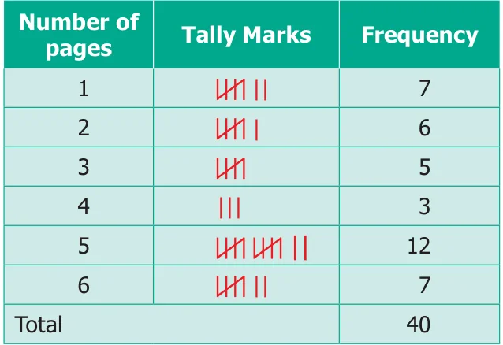
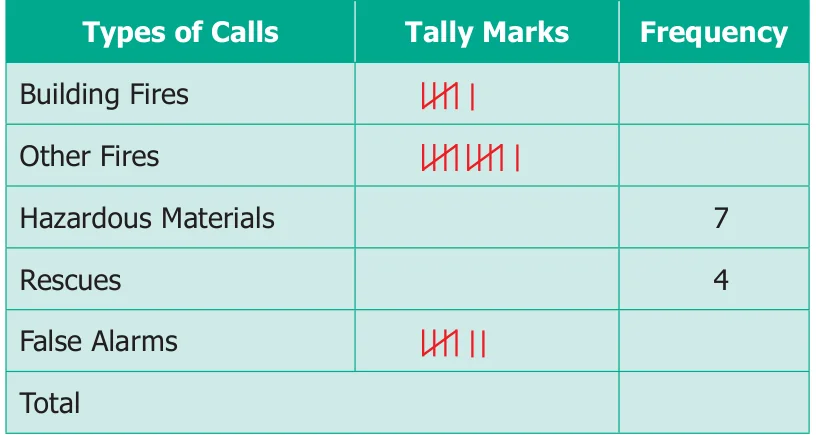

Note
- The occurrence of each information is marked by a vertical line '|'.
- Every fifth tally is recorded by striking through the previous four vertical lines as ' '.
- This makes counting up the tallies easy.
Example 5.1
Thamarai is fond of reading books. The number of pages read by her on each day during the last 40 days are given below. Make a Tally Marks table.
1 3 5 6 64 3 5 4 1 6 2 5 3 4 1 6 6 5 5 1 1 2 3 2 54 2 4 1 6 2 5 5 6 5 5 3 5 2 5 1
Solution
The Tally marks table is given below.



- Fill in the blanks.
- The collected information is called __________.
- An example of a Primary Data is __________.
- An example of a Secondary Data is __________.
- The tally marks for number 8 in standard form is __________.
- Viji threw a die 30 times and noted down the result each time as follows. Prepare a table on the numbers shown using Tally Marks.
1 4 3 5 54 6 6 4 3 5 4 5 6 5 2
4 2 6 5 54 6 6 4 5 6 6 5 4 1 1
- The following list tells colours liked by 25 students. Prepare a table using Tally Marks. Red Blue White Grey White Green Grey Blue Green Grey Blue Grey Red Green Red Blue Blue Green Blue Green Grey Grey Green Grey Red
- The following are the marks obtained by 30 students in a class test out of 20 in Mathematics subject.
11 12 134 12 12 15 16 17 18 12 20 13 134 14 14 14 15 15 15 15 16 16 164 15 14 13 12 11 19 17 Prepare a table using Tally Marks.
- The table shows the number of calls recorded by a Fire Service Station in one year.

Complete the table and answer the following questions.
- Which type of call was recorded the most?
- Which type of call was recorded the least?
- How many calls were recorded in all?
- How many calls were recorded as False Alarms? Objective Type Questions
- The tally marks for the number 7 in standard form is __________.
(a) 7 (b) || (c) (d) - The tally marks |||| represents the number count
(a) 5 (b) 8 (c) 9 (d) 10